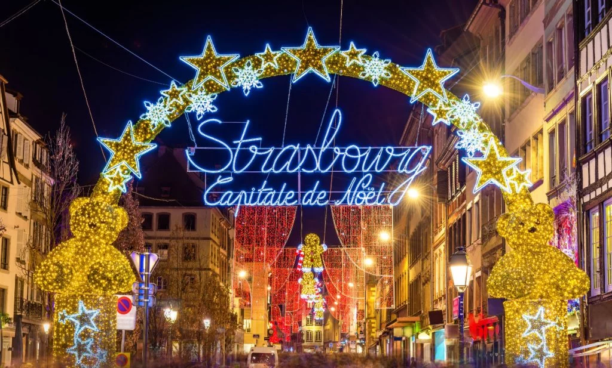
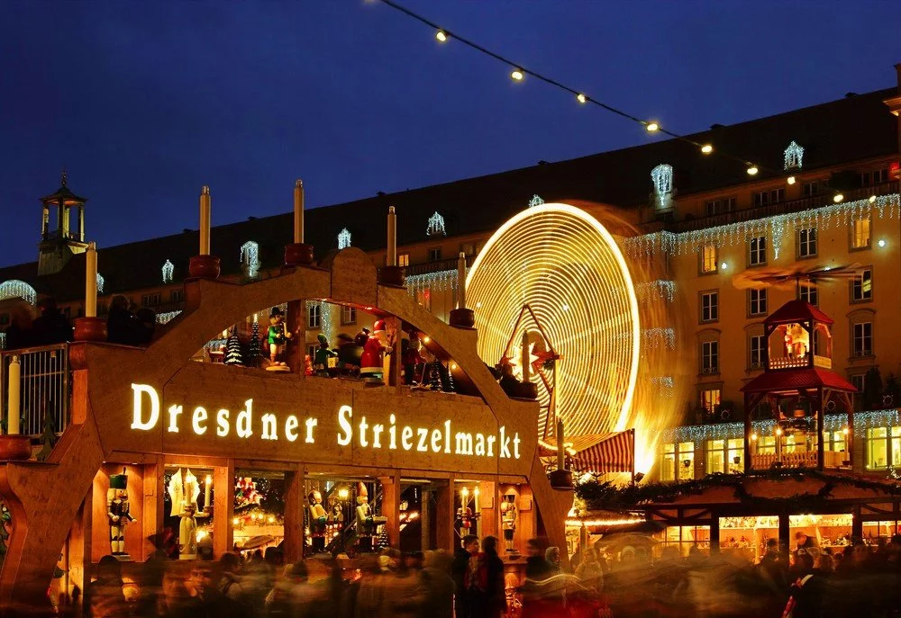
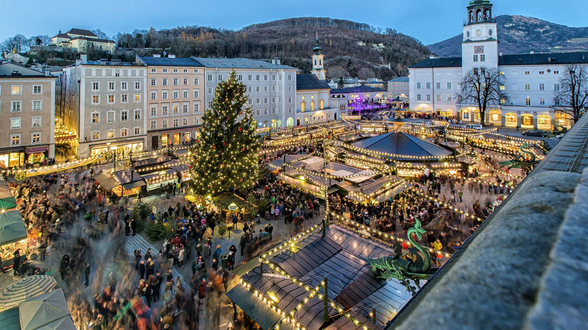
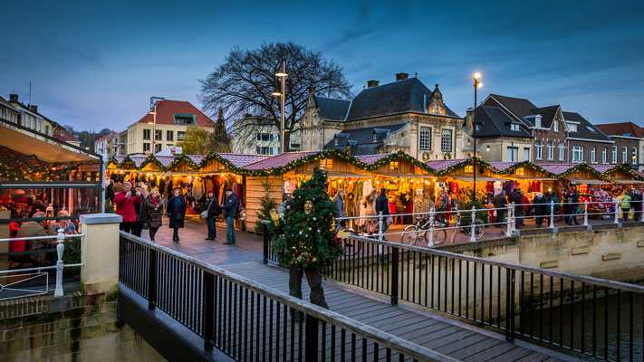
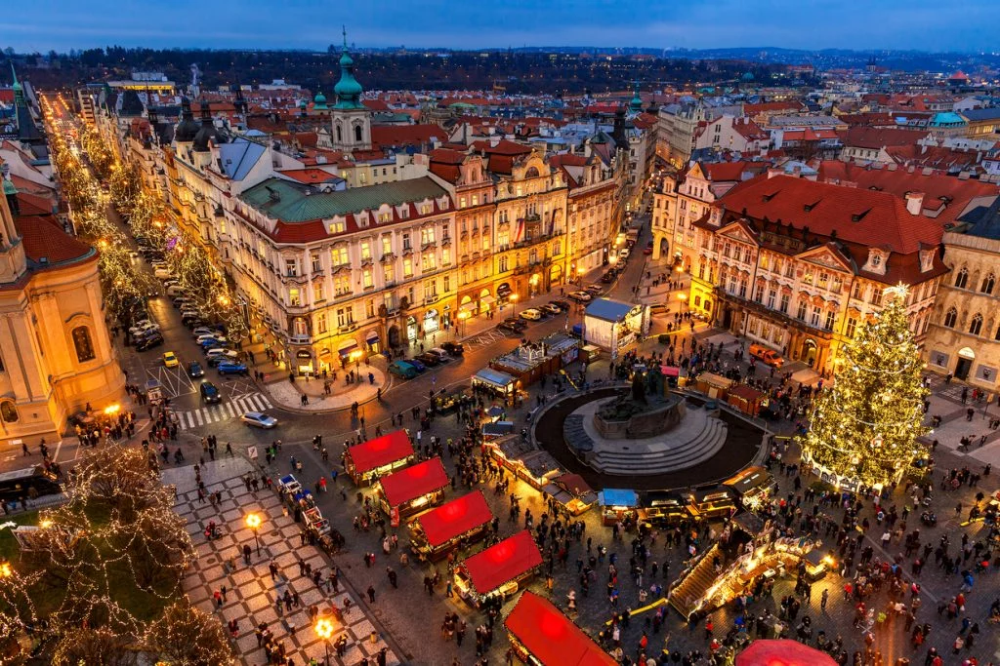

<h2 align="center">Top 5 Marchés de Noel en Europe</h2>

<table border align="center">
  <colgroup>
  <col span="1" style="background-color: #99ff66">
  <col span="2" style="background-color: #99ccff">
  <col span="3" style="background-color: #ff9999">
</colgroup>

  <thead>
    <tr>
      <th>Rang</th>
      <th>Nom</th>
      <th>Image</th>
      <th>Map</th>
      <th> Merry Christmas!</th>
    </tr>
  </thead>

<tbody>
<tr align="center">
  <th>1</th>
  <th>Marché de Strasbourg, France</th>
  <th></th>
  <th><iframe src="https://www.google.com/maps/embed?pb=!1m18!1m12!1m3!1d84484.1340616833!2d7.762079299999999!3d48.5690744!2m3!1f0!2f0!3f0!3m2!1i1024!2i768!4f13.1!3m3!1m2!1s0x4796c8495e18b2c1%3A0x971a483118e7241f!2sStrasbourg!5e0!3m2!1sen!2sfr!4v1669374169631!5m2!1sen!2sfr" width="400" height="220" style="border:0;" allowfullscreen="" loading="lazy" referrerpolicy="no-referrer-when-downgrade"></iframe></th>
  <th rowspan="6"></th>
  </tr>


  <tr>
    <th>2</th>
    <th>Marché de Dresde, Allemagne</th>
    <th></th>
    <th><iframe src="https://www.google.com/maps/embed?pb=!1m18!1m12!1m3!1d160429.22313607784!2d13.632503455539418!3d51.07696575901396!2m3!1f0!2f0!3f0!3m2!1i1024!2i768!4f13.1!3m3!1m2!1s0x4709cf29101ad6a9%3A0x421b1cb4288feb0!2sDresden%2C%20Germany!5e0!3m2!1sen!2sfr!4v1669374230483!5m2!1sen!2sfr" width="400" height="220" style="border:0;" allowfullscreen="" loading="lazy" referrerpolicy="no-referrer-when-downgrade"></iframe></th>
  </tr>

  <tr>
    <th>3</th>
    <th>Marché de Salzbourg, Autriche</th>
    <th></th>
    <th><iframe src="https://www.google.com/maps/embed?pb=!1m18!1m12!1m3!1d85756.58570581635!2d12.986390404663066!3d47.802904002817435!2m3!1f0!2f0!3f0!3m2!1i1024!2i768!4f13.1!3m3!1m2!1s0x47769adda908d4b1%3A0xc1e183a1412af73d!2sSalzburg%2C%20Austria!5e0!3m2!1sen!2sfr!4v1669374278919!5m2!1sen!2sfr" width="400" height="220" style="border:0;" allowfullscreen="" loading="lazy" referrerpolicy="no-referrer-when-downgrade"></iframe></th>
  </tr>

  <tr>
    <th>4</th>
    <th>Marché de Valkenburg, Pays-Bas</th>
    <th></th>
    <th><iframe src="https://www.google.com/maps/embed?pb=!1m18!1m12!1m3!1d40294.28212882606!2d5.786136112084304!3d50.86093053800535!2m3!1f0!2f0!3f0!3m2!1i1024!2i768!4f13.1!3m3!1m2!1s0x47c0eaaf8d233cbb%3A0x243c66f4bca24b07!2sValkenburg%2C%20Netherlands!5e0!3m2!1sen!2sfr!4v1669374408195!5m2!1sen!2sfr" width="400" height="220" style="border:0;" allowfullscreen="" loading="lazy" referrerpolicy="no-referrer-when-downgrade"></iframe></th>
  </tr>

  <tr>
    <th>5</th>
    <th>Marché de Prague, Tchéquie </th>
    <th></th>
    <th><iframe src="https://www.google.com/maps/embed?pb=!1m18!1m12!1m3!1d163930.50325928425!2d14.32554152628044!3d50.05980577969584!2m3!1f0!2f0!3f0!3m2!1i1024!2i768!4f13.1!3m3!1m2!1s0x470b939c0970798b%3A0x400af0f66164090!2sPrague%2C%20Czechia!5e0!3m2!1sen!2sfr!4v1669374433262!5m2!1sen!2sfr" width="400" height="220" style="border:0;" allowfullscreen="" loading="lazy" referrerpolicy="no-referrer-when-downgrade"></iframe></th>
  </tr>

</tbody>


</table>
